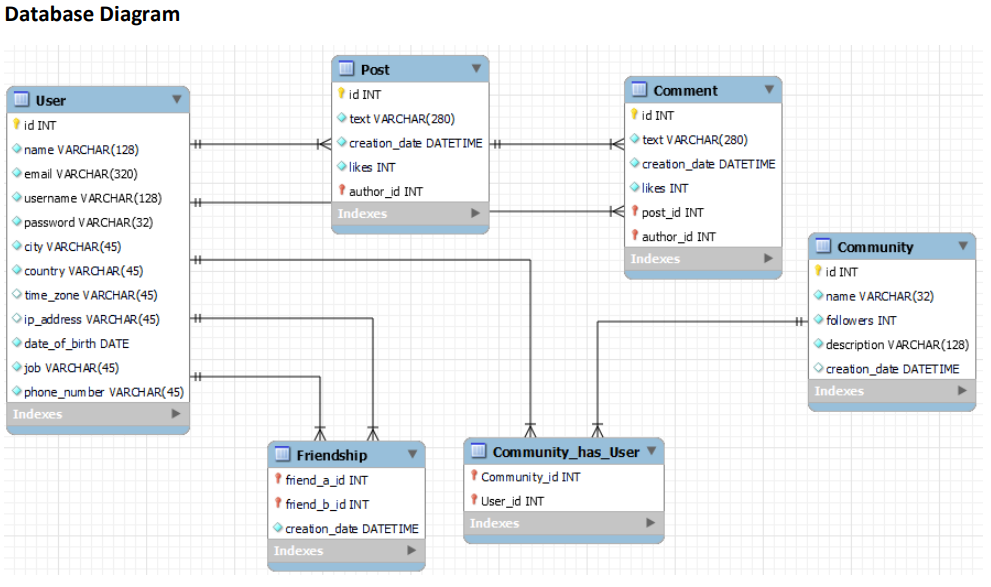
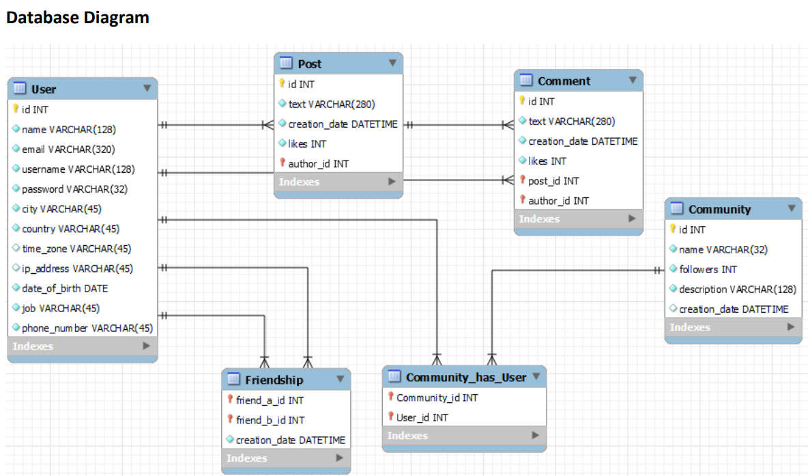
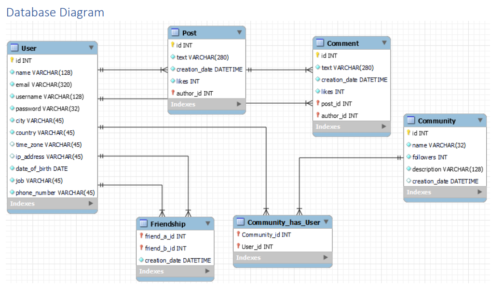
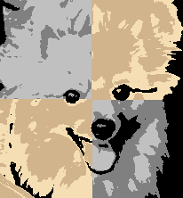
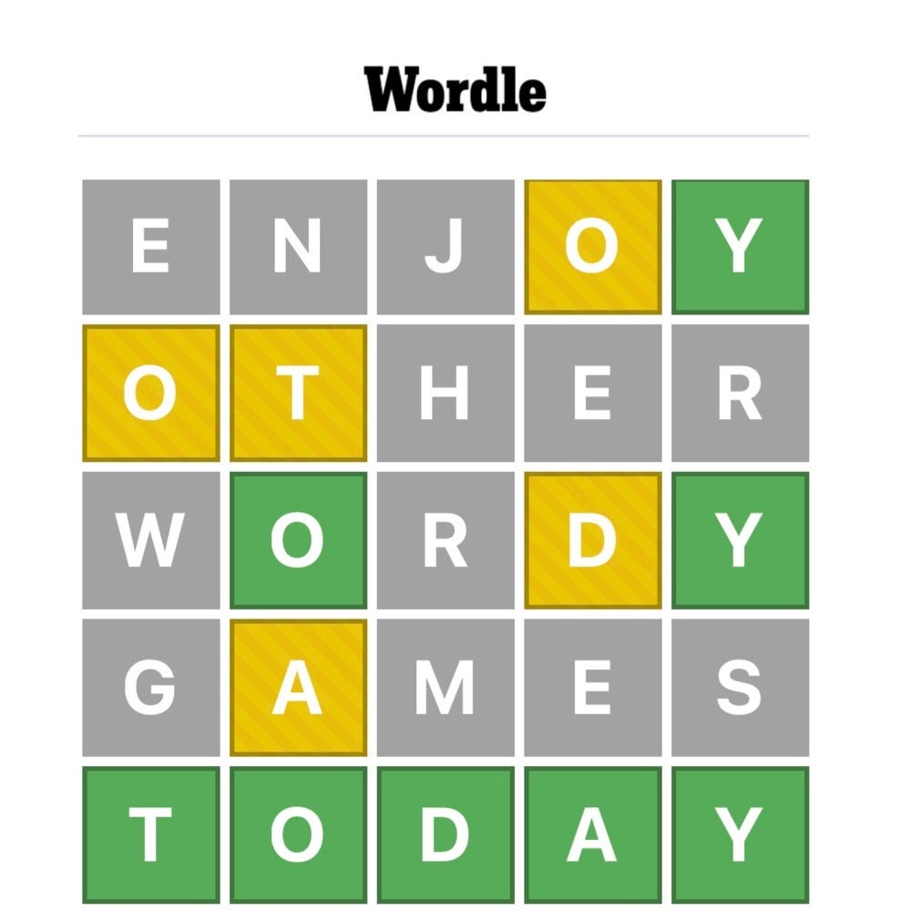

In this series of projects, I analyzed a database to identify the problems and opportunities for a company using MySQL Workbench.
This project focused on determining the best location for adverstisements, finding the most active users on the platform, and identifying unregistered accounts.


This project focused on helping make a decision for a new feature in the plaform based on the quantity of users in different age generations, finding repeated usernames and creating an internal model to track lines.

In this project, I found the top posts in the platform and identified potential robot accounts and posts from the testing phase.

For this project I created various filters commonly found on social media and my own creative filter.

For this project I created a Wordle Game using classes and objects.